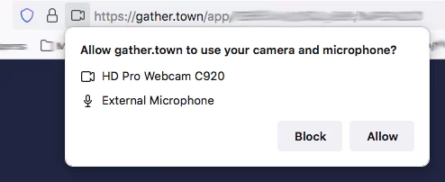
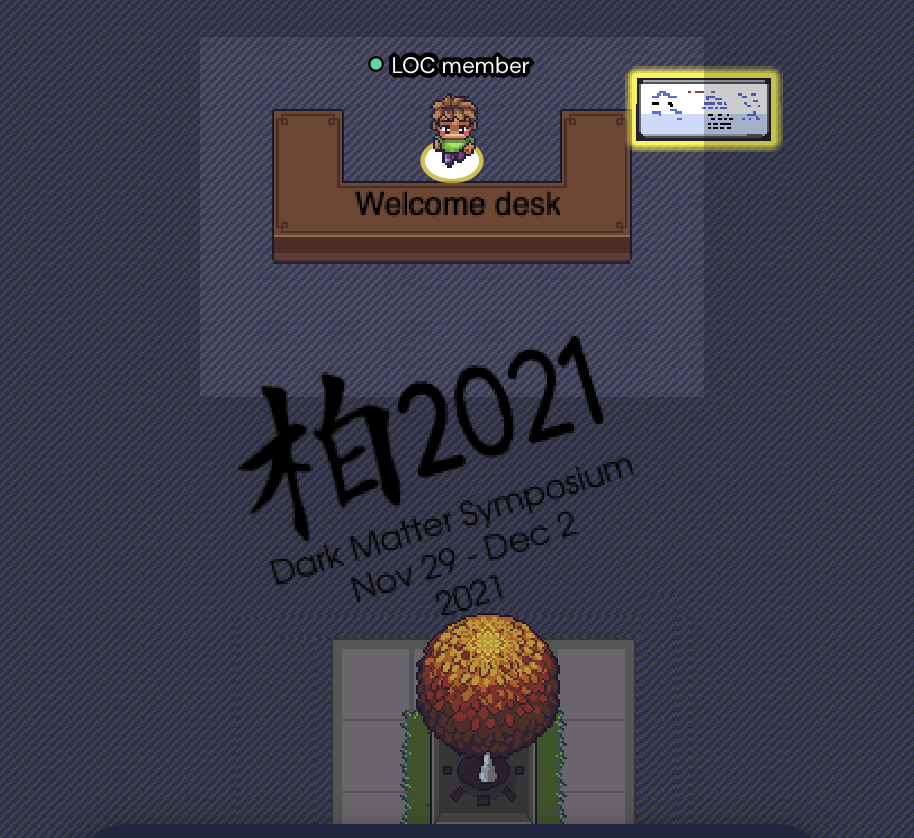
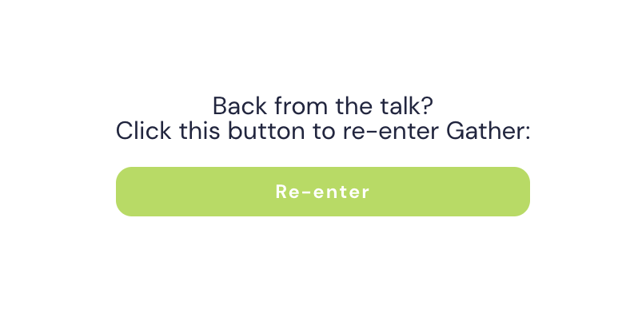

As registered participant, you can log in to the Kashiwa Dark Matter Symposium Space on Gather.Town using the E-mail address you have registered with (it is the address to which we sent you all notifications about the symposium).
Short intro to use Gather.Town (TL;DR version):
Move around using the arrows or the W-A-S-D keys on your keyboard
Press "X" to interact with things or to enter Zoom
See below for more details and trouble shooting for moving around in Gather.Town.
Gather.Town: Getting started
Gather.Town runs in your web browser. We recommend using Chrome, Firefox, or Edge. Safari may not run as smoothly as the others.
Give your browser access to your camera and microphone. Click on the little camera symbol in the address bar to change settings. By default, Gather.Town broadcasts you only if the tab with Gather.Town is open.
Choose your avatar. Your name and affiliation is already pre-defined according to the information you provided at registration.

Watch out for the camera in your browser's address bar and click on it to check settings.
Walking around
Use the arrows or the W-A-S-D keys on your keyboard to walk around.
Open the mini map at the bottom to see where you are
Use the X key to interact with things (read the black board, view the posters, enter Zoom lecture,...)
Use the G key to fly like a ghost through other people blocking you
Use the Z key to dance

After entering Gather.Town, say first hello at the welcome desk. Members of the Local Organizing Committee are happy to welcome you and help with any question.
Talking to people
Switch on your camera and microphone to talk to people you are passing by: Camera und microphone symbols appear when you hover over the tile displaying you in the lower right
Enter a private space (mostly marked by carpets) to talk with a little group or a single person
Find people in the venue by clicking on their name on the partipant list + "locate on map", and follow the path
You can chat with only people nearby or everyone (everybody will see your chat messages)
Chat with people standing close to you. If you click on the arrows in the upper right, you can make their videos bigger.
Switching to the talks on Zoom
In the lecture hall, you can enter the Zoom sessions to pressing 'X'. Then you are offered to click on a link bringing you to a Zoom session. When entering Zoom, you are muted and your camera is automatically switched off in Gather.Town (you become a ghost there). If you leave Zoom, you are offered to re-Enter symposium in the browser tab where you left Gather-Town:

After the lecture session on Zoom has ended (or you left for having a break), just click on Re-enter to get back to Gather.Town.
Troubleshooting
Just reloading the page will often help when stuck
If your PC is close to burn or everything is very slow, disable "Smooth Movement" in the Settings. This will significantly reduce your CPU load.
Microphone or video does not work: Check if you gave your browser access (see "Getting Started"). Check if you selected the correct device (e.g., if you have several cameras). Check whether another application (e.g. Zoom) is accessing them (causes problems on some systems).
Get more help here: https://support.gather.town/help/av-troubleshooting